Water Towers of UkraineAn illustrated atlas, 1866–2026
40 dossiers: dates of construction and reconstruction, architects, engineers and clients, structures, heritage status and openly licensed photographs. Narrated by the water tower in Mala Vilshanka.
The tower speaks: who we are, the water towers of Ukraine
This study is the second work in the IMWT series, after “A History of the World’s Water Towers”. It is based on the IMWT illustrated research atlas of 17 November 2026 (37 dossiers). In this edition every dossier has been checked against registers, archival reports, encyclopaedic and professional sources; for each tower a photograph with an open licence has been found and embedded, or the dossier is honestly marked “photo wanted”; dates, designers and clients have been clarified; and three new objects have been added.
The main rule: the year of construction, the date of commissioning, the register date, the date of reconstruction and the date of a photograph are different fields. The engineer of a structural system is not always the architect of a particular tower, and the author of a city’s waterworks did not necessarily design its tower.
This is the English edition of a study first published in Ukrainian. Place names follow the official Ukrainian national transliteration; Lviv architects of the Austro-Hungarian and interwar Polish periods are given in their Polish spelling. Titles of Ukrainian sources are translated into English for convenience; the documents themselves are in Ukrainian.
How facts and photographs were verified
| Level | Meaning | Examples |
|---|---|---|
| A primary | Law, State Register, state archive, primary museum or municipal document | Ministry of Culture lists, Zhytomyr archives, Cabinet of Ministers Resolution No. 929 |
| B professional | Academic or professional publication, encyclopaedia | Encyclopedia of Modern Ukraine, Great Ukrainian Encyclopedia, papers of KNUBA, Lviv Polytechnic, VNTU, Uzhhorod University |
| C reference | Media, local history description, tourist portal, photo caption | City portals, Wikimedia Commons, news sites |
The level of a dossier corresponds to the best source for its key facts. Any date or attribution confirmed only at level C is explicitly flagged in the text as requiring archival verification.
Photographs
For each tower we looked for an accurately attributed photograph on Wikimedia Commons, with the photographer’s name, the date it was taken, an open licence and, where possible, the monument’s heritage identifier. Each photograph is credited with author, year, licence and a link to its file page. Where no reliable open photograph exists, the dossier carries the label “PHOTO WANTED”. Photographs from publications without an open licence are mentioned but not reproduced.
Occupied territories
The three towers in Crimea (Simferopol, Yevpatoriia, Feodosia) and the tower in Chasiv Yar are described from Ukrainian lists and pre-war photography. Their current condition is not confirmed. Publications of institutions operating in the occupied territories under the control of the aggressor state are not used as sources.
What was added and corrected compared with the atlas of 17 November 2026
| Item | Change |
|---|---|
| Photographs | 37 photographs with open licences embedded (the atlas PDF contained no photographs — only QR codes). Photographs found for towers the atlas listed as having none: Shostka, Zaporizhzhia (Barykadna), Uman, Velyka Bakta, Simferopol, VDNH, Holosiiv, Kulparkiv, Chasiv Yar, Piskivka (station tower). |
| Kyiv, Water Museum | Dates clarified: waterworks opened on 1 March 1872; surviving tower 1875–1876; older tower 1871–1872, dismantled 1939–1940, rebuilt 2003; museum opened on 24 May 2003. |
| Mykolaiv | Stages added: July 1904 — community decision; 1906 — foundation and wells; January 1907 — erection; 15 March 1907 — connected to the network; height ≈32 m; Intze tank. |
| Vinnytsia | Address clarified (11 Hrushevskoho Street, European Square); the tower served as a water tower until 1920; construction took ≈11 months. |
| Hlukhiv | Added: the tower stands on the site of the Putyvl Gate of the Hlukhiv fortress; 186 steps to the observation deck. |
| Cherkasy | Added: during the 1949 reconstruction some riveted joints were replaced with welded ones. |
| Uman | Address established: 29 Yevropeiska Street. |
| Feodosia | Reference to a publication of an occupation institution removed; the 1898 date relies on the Ukrainian list. |
| New objects | Kremenchuk: Tower No. 1 (Svobody Avenue) and Tower No. 2 (railway station); Izmail: tower on Myru Square, demolished in 2024 (according to a Commons caption). |
| Structure | Dossiers arranged by era (seven parts) instead of a list; the tower’s voice, a chronology and an index added. |
The dates that shape the history of Ukrainian towers
Rows are ordered by the earliest date. A date does not always mean completion of construction — see the dossier.
| Date | Tower | Place | Photo |
|---|---|---|---|
| 1866–1898 | Water tower of the Kachanivka estate | Kachanivka, Chernihiv Oblast | ✓ |
| 1871–1872; dismantled 1939–1940; rebuilt 2003 | Water Museum tower (reconstructed) | Kyiv, Khreshchatyi Park | ✓ |
| 1874 / rebuilt 1946 | Waterworks tower on Barykadna Street | Zaporizhzhia, Barykadna / Topolyna streets | ✓ |
| 1875–1876; reconstructed 2003 | Water Museum tower (surviving) | Kyiv, Khreshchatyi Park | ✓ |
| 1879 | Water tower near the Kyiv Pechersk Lavra | Kyiv, 23 Ivana Mazepy Street | ✓ |
| 1889 | Brick tower of Chornorudka station | Nova Chornorudka, Zhytomyr Oblast | ✓ |
| 1891 | Tower of Potash station | Potash, Cherkasy Oblast | ✓ |
| 1893–1894 | Tower in Stryiskyi Park | Lviv, Stryiskyi Park | ✓ |
| 1895–1898 / register 1898–1899 | Zhytomyr water tower | Zhytomyr, 24 Viktora Kosenka Street | ✓ |
| 1895 in the register / 1904 in the city list | Tower of the Second Catherine Railway | Zaporizhzhia, 2B Ivanova Street | ✓ |
| 1898 | “White Pool” tower | Feodosia, Autonomous Republic of Crimea, 77-a Ruska Street | ✓ |
| 1905 / rebuilt in the 1930s | Tower of the Kulparkiv hospital | Lviv, Kulparkiv | ✓ |
| 1905 | Tower of Krolevets station | Krolevets, Sumy Oblast | ✓ |
| early 20th century | Railway tower in Piskivka | Piskivka, Kyiv Oblast | ✓ |
| early 20th century | Tower of Velykyi Burluk station | Velykyi Burluk, Kharkiv Oblast | ✓ |
| early 20th century | Uman water tower | Uman, 29 Yevropeiska Street (formerly Lenina) | ✓ |
| early 20th century | Water tower of the Tereshchenko estate | Shpytky, Kyiv Oblast | ✓ |
| early 20th century | Yevpatoriia water tower | Yevpatoriia, Autonomous Republic of Crimea, 43 Kyivska Street | ✓ |
| 1906–1907 | Shukhov tower in Mykolaiv | Mykolaiv, 9 Riumina Street | ✓ |
| 1909 | Simferopol water tower | Simferopol, Autonomous Republic of Crimea, 27 O. Nevskoho Street | ✓ |
| 1910s / c. 1929 | Hyperboloid tower in Shostka | Shostka, Sumy Oblast | ✓ |
| 1911–1912 | Artynov Tower | Vinnytsia, 11 Hrushevskoho Street (European Square) | ✓ |
| 1913–1914 | Hyperboloid tower in Cherkasy | Cherkasy, 12 Hetmana Sahaidachnoho Street | ✓ |
| first half of the 20th century | Hyperboloid tower in Piskivka | Piskivka, Kyiv Oblast | ✓ |
| 1927–1928 | Shukhov tower in Chasiv Yar | Chasiv Yar, Donetsk Oblast | ✓ |
| 1927–1928 | Hlukhiv waterworks tower | Hlukhiv, Sumy Oblast | ✓ |
| 1928–1929 | Shukhov tower in Konotop | Konotop, Sumy Oblast | ✓ |
| 1929 | Shukhov tower in Bila Tserkva | Bila Tserkva, Kyiv Oblast | ✓ |
| 1932–1934 | Shukhov tower in Pomichna | Pomichna, Kirovohrad Oblast | ✓ |
| 1932–1933 | Tower of Nowy Lwów (New Lviv) | Lviv, 24A Ternopilska Street | ✓ |
| 1932–1933 | Mayorivka tower | Lviv, 67 Pasichna Street | wanted |
| 1936 | Velyka Bakta water tower | Velyka Bakta, Zakarpattia Oblast | ✓ |
| 1949 | Pisky-Radkivski water tower | Pisky-Radkivski, Kharkiv Oblast | wanted |
| 20th century | Kovel water tower | Kovel, Volyn Oblast, Veteraniv Street | ✓ |
| 1950s; register 1958 | VDNH water tower | Kyiv, 1 Akademika Hlushkova Avenue (National Expocentre) | ✓ |
| 1955 | Tower of the Holosiiv academy | Kyiv, 11-A Horikhuvatskyi Shliakh (National University of Life and Environmental Sciences) | ✓ |
| 20th century; demolished 2024 | Waterworks tower on Myru Square, Izmail (lost) | Izmail, Odesa Oblast, Myru Square | ✓ |
| date under archival search | Water Tower No. 1, Kremenchuk | Kremenchuk, Poltava Oblast, Svobody Avenue | ✓ |
| date under archival search | Water Tower No. 2 at the railway station, Kremenchuk | Kremenchuk, railway station grounds | ✓ |
| year of construction not established | Mala Vilshanka water tower | Mala Vilshanka, Kyiv Oblast | wanted |
Early urban, estate and railway towers
From the estate modernisation of Kachanivka (1866–1898) and Kyiv’s first waterworks (1872) to the railway towers of the 1880s–1890s. Water needs a vertical, but the city gives that vertical the language of Gothic Revival, the Renaissance or the castle; the tank is often hidden inside the architectural body.
Water tower of the Kachanivka estate

History
The tower was built during the construction phase of 1866–1897/1898. It was damaged in the Second World War and rebuilt in 1947. The national ensemble of Kachanivka lists the tower as a separate component, and it forms part of the national monument approved by Resolution of the Cabinet of Ministers of Ukraine No. 929 of 10 October 2012. [1, 2]
Architecture and structure
About 20 m high; round brick shaft in three tiers with a tented roof. The original tank type, the route of the pipelines and the share of authentic masonry surviving after 1947 still have to be established.
Research agenda
Determine the exact year from the Tarnovsky family archive; compare the 1866–1897 designs, photographic records and restoration documents. The philosophy of the object: hidden infrastructure inside an aristocratic landscape.
Water Museum tower (surviving)

History
The first stage of Kyiv’s centralised water supply was ceremonially opened on 1 March 1872 on this very site, in the former Tsar’s Garden. The tower with the main entrance (≈29 m) was built in 1875–1876. In 2003 it was reconstructed to the original drawings, including the fire look-out turret, and on 24 May 2003 the Water Information Centre (Water Museum) opened here. [3, 4, 5, 6]
Architecture and structure
Brick tower about 29 m high with a fire look-out turret. The museum’s main exhibition is underground, in a former drinking-water reservoir of 1909 (when Kyiv switched to artesian water); the reservoir should not be confused with the early towers.
Research agenda
Distinguish the original fabric from the 2003 interventions; check the dates 1875–1876 and 1876–1877 against the drawings. The philosophy: a municipal machine turned into a museum of water literacy.
Water Museum tower (reconstructed)
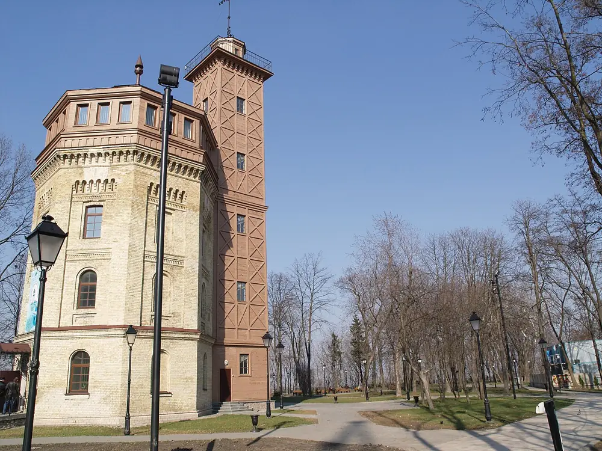
History
The neighbouring, older tower of the complex was built in 1871–1872 and dismantled in 1939–1940. In 2003 it was rebuilt to the original drawings; today it houses the administration of the Water Information Centre. [3, 4, 7]
Architecture and structure
The silhouette and volume reproduce the historic tower, but its material authenticity is modern. This distinction is essential for museum labelling.
Research agenda
Describe the reconstruction separately as a 2003 replica, not as a fully preserved structure of 1872. The philosophy: the memory of a form in the absence of its original matter.
Waterworks tower on Barykadna Street

History
The city list of newly identified heritage objects gives 1874 as the year of construction and 1946 as the year of reconstruction. This is a different structure from the tower of the Second Catherine Railway at 2B Ivanova Street. The tower is also identified on Wikimedia Commons (photographs of 2019 and 2023, at the corner of Barykadna and Topolyna streets). [8, 9]
Architecture and structure
Without measured surveys it is unknown how much of the 1874 masonry survives; a historical date is not the same as material authenticity.
Research agenda
Photographs and archival plans of the 1870s and 1946 are needed. The philosophy: the memory of early municipal water supply, partly rewritten by reconstruction.
Water tower near the Kyiv Pechersk Lavra

History
The register document records the year 1879. Recent photographs of 2026 confirm the identity of the building at 23 Ivana Mazepy Street (also captioned as 11 Lavrska Street). Both photographs on Wikimedia Commons bearing register identifier 80-382-0300 show a building that now looks like a chapel with a dome and a mosaic; when and how it was adapted needs separate verification. [10, 11]
Architecture and structure
Measured surveys and an analysis of the plan and tank are required; proximity to the Lavra raises the standard for analysing the historic setting.
Research agenda
Establish the original hydraulic role and the designer through the records of the city waterworks. The philosophy: a technical structure in a sacred historic landscape.
Brick tower of Chornorudka station

History
The tower is dated 1889 and resembles a castle keep. The official list records it as a monument of local significance; tourist sources link its construction to the Tereshchenko estates but cite no primary contract. [12, 13]
Architecture and structure
Brick architectural shell; the tank type, the height of the tank bottom and the station’s water supply regime are unknown.
Research agenda
Search the archives of the station, the sugar factory and the landholding. The philosophy: an industrial structure styled as a medieval fortress.
Tower of Potash station

History
The tower is dated 1891. In 2025–2026 its protection status was the subject of court and administrative proceedings. A 2021 photograph on Commons confirms the object and the date of recording. [14, 15]
Architecture and structure
Masonry station building; the state of preservation of the tank, floors and stairs needs to be investigated.
Research agenda
Separate a court decision ordering documentation from actual inclusion in the Register. The philosophy: cultural value that becomes visible through a conflict over protection.
Tower in Stryiskyi Park

History
The official list gives autumn 1893; sources on the Regional Exhibition give 1894. In 1976 the tower was converted into the café-restaurant “Vezha”. [16, 17]
Architecture and structure
About 18 m high, with a historic tank of 60 m³. It remains to be determined what survives of the original water-supply equipment.
Research agenda
Do not average 1893 and 1894: check the completion records and the opening of the exhibition. The philosophy: a technical structure disguised as romantic fortification.
Zhytomyr water tower

History
The State Archives record the design and estimate of 1894, the laying of the foundation in 1895, the acceptance certificate of 1897 and the completion report of 1898. The city tourist portal gives the opening date as 27 December 1898. [18, 19]
Architecture and structure
31 m high, with two tanks of 100 m³ each; the tower combined water regulation with a look-out function. It ceased to serve the waterworks around 1965.
Research agenda
Explain the discrepancy between the register dates (1898–1899) and the archival ones (1897–1898). The philosophy: an engineering vertical that became a city symbol.
“White Pool” tower
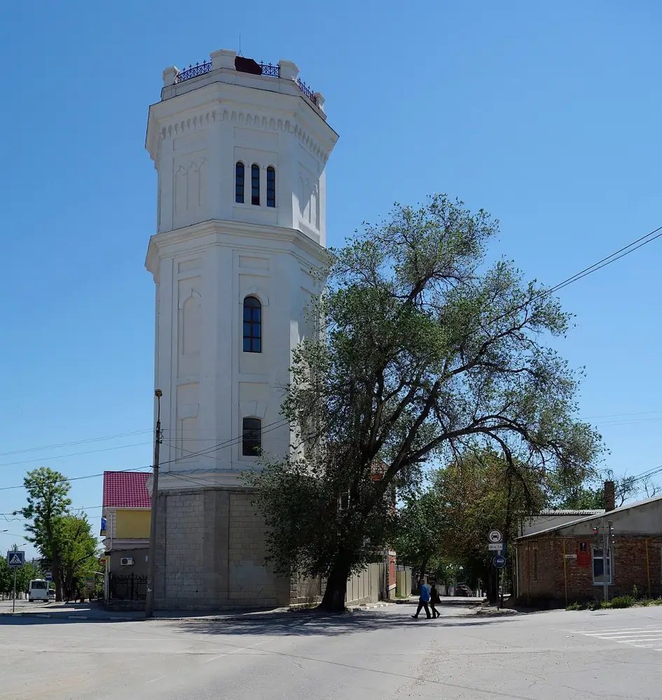
History
The tower is dated 1898 in register sources; on Wikimedia Commons it is identified at 77-a Ruska Street (2016 photograph). Because of the occupation since 2014, its current condition and access regime have not been confirmed. [20, 21]
Architecture and structure
Masonry engineering structure with expressive modelling; measurements of the tank and an assessment of the masonry are required.
Research agenda
Locate the original drawings, waterworks plans and old photographs. The philosophy: the reservoir as an architectural image and part of the city’s toponymy.
The 2017 professional article cited by the atlas was published by an institution in the occupied territory and is not used in this edition. The dating relies on the Ukrainian list of monuments of the Autonomous Republic of Crimea.
Tower of the Second Catherine Railway
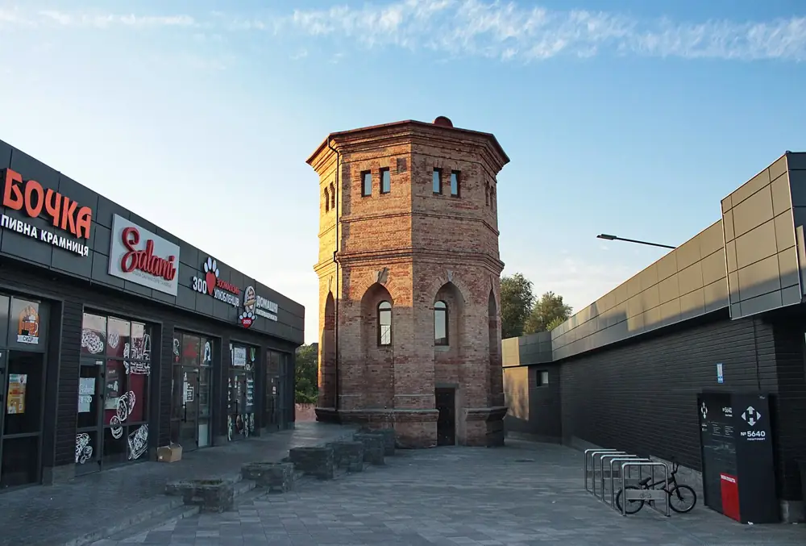
History
The register gives 1895, while the city list of newly identified objects mentions 1904. Oleksandrivsk-II station opened in 1904; the date of the station does not prove the date of the tower. [22, 23]
Architecture and structure
Railway tower; the media describe its post-war disuse and decay. Lost and authentic elements must be distinguished.
Research agenda
Check the railway plans and the 2022 order. The philosophy: an engineering object on the border between privatisation and the public interest.
Shukhov’s steel lattice: hyperboloid towers
Volodymyr (Vladimir) Shukhov’s (1853–1939) hyperboloid lattice shell was the first structure of its kind in the world (1896). A group of towers built in 1907–1934 survives in Ukraine: Mykolaiv, Cherkasy, Konotop, Bila Tserkva, Chasiv Yar, Pomichna, Shostka and Piskivka. Authorship here is shared between the structural designer, the hydraulic engineer, the client and the manufacturing plant.
Shukhov tower in Mykolaiv

History
The city community raised the question of building the tower in July 1904. In 1906 work began on the stone foundation and the drilling of wells; erection of the hyperboloid structure was completed in January 1907, and on 15 March 1907 the tower was connected to the city network. In 1944 it was blown up by retreating German troops; after the war it was restored and used until 1958. [24, 25, 26, 27]
Architecture and structure
Steel lattice hyperboloid tower about 32 m high with an Intze-type tank. Reference sources mention the support of the industrialist Ioakim Kannegiser (level C). Corrosion, the bar intersections, anchoring and the foundation need to be investigated.
Research agenda
Distinguish the authorship of the hydraulic system from that of the structure; verify the stages of post-war restoration in the archives. The philosophy: the mathematics of a straight bar generating a curved form.
Hyperboloid tower in Cherkasy

History
Construction of the waterworks began on 16 August 1913; the tower and network were built in 1914. The structure was damaged in the Second World War and restored afterwards; according to local sources it remained in service until 1975. According to reference data, during the 1949 reconstruction some riveted joints were replaced with welded ones; a restoration is planned. [28, 29, 30]
Architecture and structure
Hyperboloid lattice; the tank stood at a height of about 35 m. Historical data on its capacity need conversion from old units and verification.
Research agenda
Obtain the drawings and the post-war reconstruction report; do not project the historical condition onto 2026. The philosophy: engineering as a civic landmark.
Hyperboloid tower in Shostka

History
Encyclopaedic data assign the structure to the 1910s. A local study of 2019 refers to a workshop passport giving commissioning around 1929. The atlas of 17 November 2026 considered the tower to have no photograph; this edition found an accurately attributed series on Wikimedia Commons (2020). [31, 32]
Architecture and structure
Dating requires steel maker’s marks, structural joints, the equipment passport and drawings.
Research agenda
Do not choose one date arbitrarily: the contradiction is itself the subject of research. The philosophy: industrial memory that depends on the accuracy of the archive.
Shukhov tower in Chasiv Yar

History
Built in 1927–1928 for the plant and its housing district. In 2019 it was added to the list of newly identified heritage objects; under wartime conditions its physical condition cannot be considered verified. [33, 34]
Architecture and structure
Steel lattice tower; without access, actual deformation or the extent of destruction cannot be assessed.
Research agenda
As a priority, preserve pre-war photographs, video, drawings and 3D data. The philosophy: digital memory as a form of protection when physical access is impossible.
Shukhov tower in Konotop

History
The city museum holds a 1928 photograph of the builders. The tower was built in 1928–1929. It was damaged during the war; the tank was dismantled in 1980, and the tower was later used for telecommunications. [35, 36]
Architecture and structure
Single-sheet hyperboloid of 25 pairs of steel angle bars, with a base 16 m in diameter according to the city’s description. The tank does not survive.
Research agenda
Compare the 1928 photograph with the present condition and the drawings; assess the consequences of losing the tank. The philosophy: when the function disappears, the frame remains as the memory of a technology.
Shukhov tower in Bila Tserkva

History
The tower was built in 1929, damaged in the Second World War and restored in 1946. The city investment portal has considered adapting it for tourism. [37, 38]
Architecture and structure
Approximately 45–50 m high according to the city portal; steel frame and tank; the structural joints require a technical passport.
Research agenda
Check the current condition, the date of the latest survey and the legal regime. The philosophy: a hydraulic structure as a future public space without losing its engineering authenticity.
Shukhov tower in Pomichna
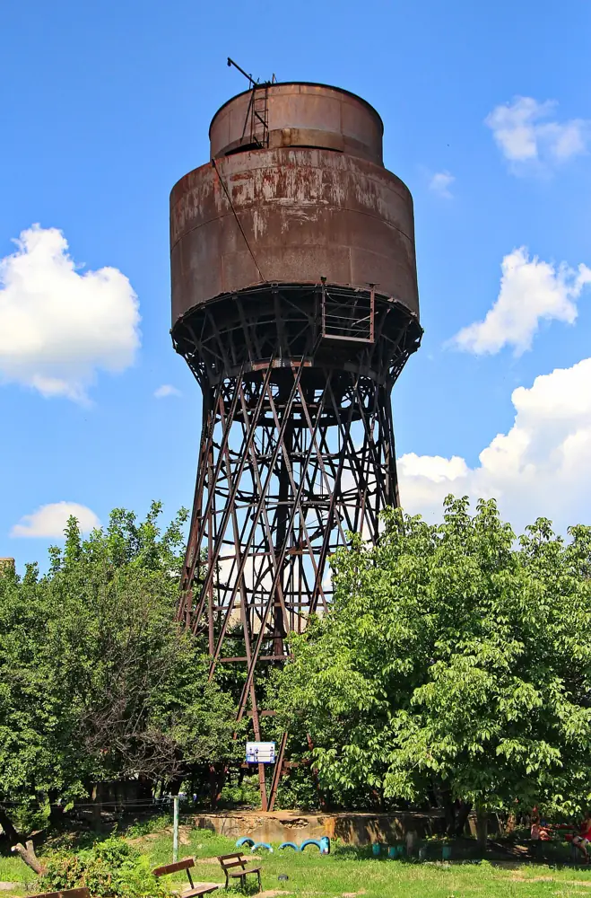
History
A doctoral dissertation dates construction to 1932–1934. The tower served the railway junction; the exact start of operation requires archival verification. [39, 40]
Architecture and structure
Two-tier structure, approximately 20 m high; a professional source gives two tank volumes of 300 and 90 m³. These figures should be checked against the passport.
Research agenda
Search for the documentation of the Southern/Odesa Railway and of the steelwork manufacturer. The philosophy: compact spatial geometry as a symbol of railway modernisation.
Hyperboloid tower in Piskivka
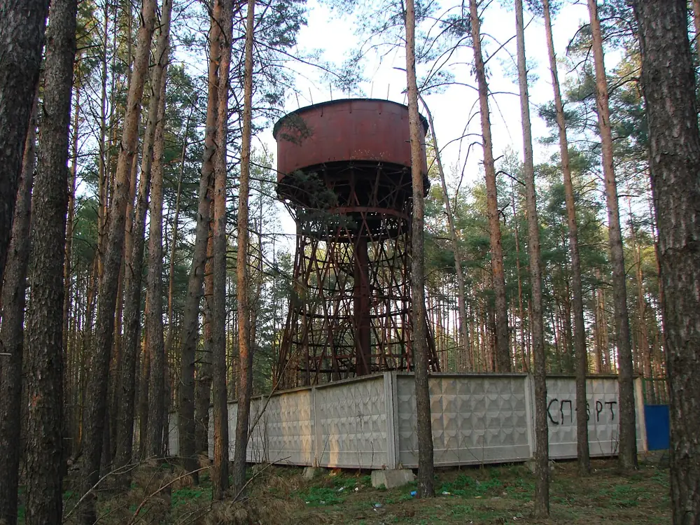
History
Local history materials document two different towers in Piskivka: a hyperboloid one and an older masonry railway tower. They must not be merged into one entry. [41, 42]
Architecture and structure
Steel hyperboloid; it is important to record the number of bars, the joints and the foundation. Precise dating has not yet been proven.
Research agenda
Find the maker’s mark, station records and railway inventories. The philosophy: an industrial type that is easily lost through confusion between objects.
Art Nouveau, early reinforced concrete and functionalism
The early reinforced concrete of Kulparkiv (1905), Artynov’s “town hall of water” in Vinnytsia (1911–1912), the Hlukhiv vertical on the site of a fortress gate (1927–1928), Witold Minkiewicz’s functionalist towers in Lviv (1932–1933) and a Transcarpathian tower of 1936.
Tower of the Kulparkiv hospital

History
The reinforced-concrete tower was built in 1905. During the renovation of the hospital in the late 1920s and early 1930s the structure was converted to two tanks, and supports and stairs were added. [43, 44]
Architecture and structure
An early experiment with reinforced concrete. The design sections, reinforcement, corrosion and the effect of the 1930s additions need to be checked.
Research agenda
Clarify the original set of drawings and the register status. The philosophy: the transition from “architecture of the shell” to the open logic of the material.
Tower of Krolevets station

History
The tower is part of the railway station complex; the register date is 1905. A 2008 photograph on Commons confirms the structure’s separate identity. [45, 46]
Architecture and structure
Railway tower supplying locomotives and the station; the tank volume and layout require measurement.
Research agenda
Find station inventories and archival track plans. The philosophy: infrastructure without which the age of steam could not work.
Simferopol water tower

History
The verified list of monuments of the Autonomous Republic of Crimea records a tower of 1909. Because of the occupation, its current condition, access regime and ownership have not been confirmed in this study. On Wikimedia Commons the tower is identified (2013 photograph, 27 O. Nevskoho Street, hospital grounds). One later caption dates it to 1815; this contradicts the register date of 1909 and needs archival verification. [20, 47]
Architecture and structure
Identification requires archival plans, photographs and a comparison of address data.
Research agenda
Find a pre-war photograph and the archive of the city waterworks. The philosophy: cultural heritage separated from the researcher by a political border and war.
Artynov Tower
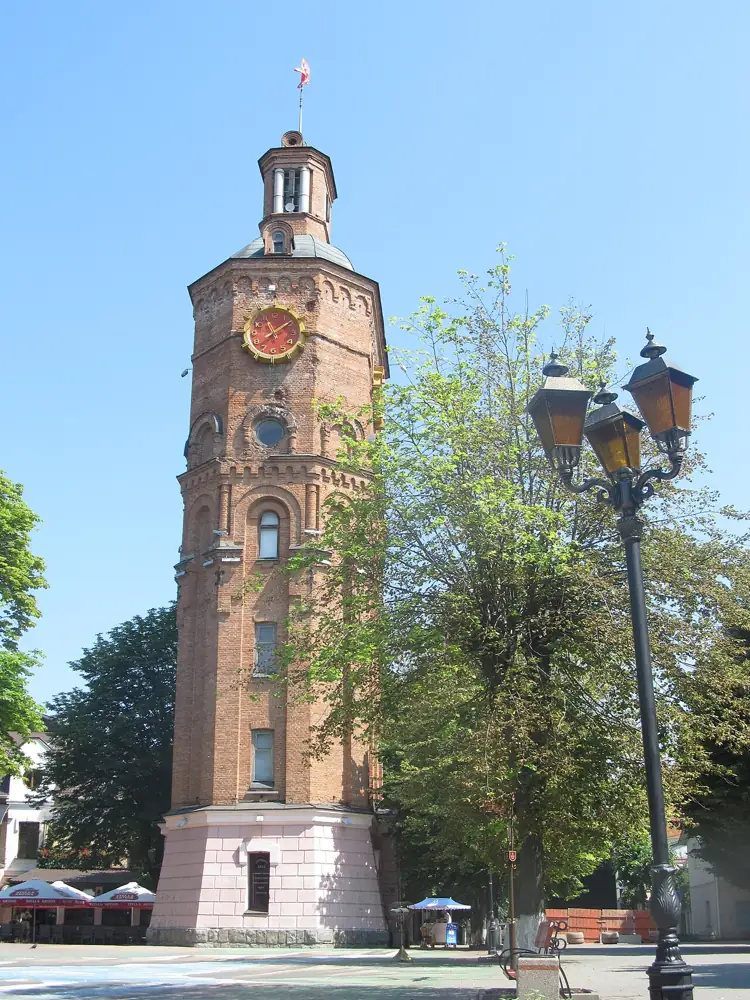
History
The building contract was signed on 1 December 1910; the masonry walls were completed on 15 July 1911, and construction took about eleven months. Sources date completion to 1911 or 1912 (reference works give 1912). It functioned as a water tower until 1920; during the Second World War it was an observation post, and after the war it housed flats for waterworks staff. On 17 February 1983 it was registered as a monument of local significance; since 1985 it has been a museum (since 1993 with an exhibition commemorating veterans of the Soviet–Afghan War), and an observation deck opened in September 2024. [48, 49, 50, 51]
Architecture and structure
Seven-tier octagonal brick tower with a clock; sources give different heights (26–28 m in technical reference works). It combined water-supply, fire-watch, clock and observation functions.
Research agenda
Find the acceptance certificates and building contracts; separate the date of structural completion from the start of operation. The philosophy: a town hall created by engineering necessity.
Hlukhiv waterworks tower
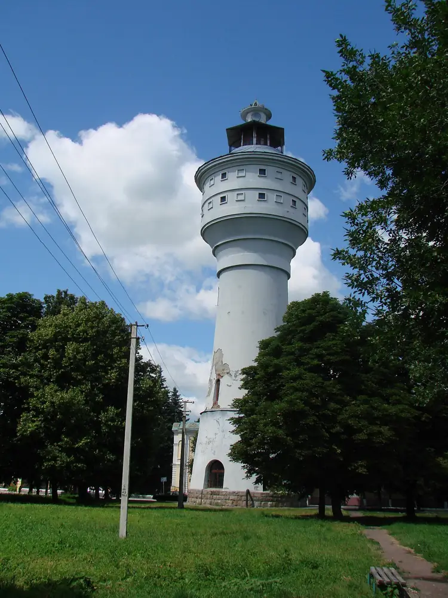
History
The design of the city waterworks was drawn up in 1910; the tower was built in 1927–1928 (reference portals give 1927) on the site of the Putyvl Gate of the Hlukhiv fortress. Some local history materials give 1929. The upper tier once held the city clock; in summer an observation deck is open. [52, 53, 54]
Architecture and structure
About 40–41 m high, 36 m to the bottom of the tank, capacity 360 m³ (according to the Hlukhiv National Reserve). The round tapering shaft turns at the top into a two-tier cylinder with rectangular windows; inside, a spiral staircase of 186 steps.
Research agenda
Verify the acceptance date (1928/1929) and Rozanov’s role. The philosophy: the tower as the city’s clock, infrastructure and a symbol of self-government.
Tower of Nowy Lwów (New Lviv)
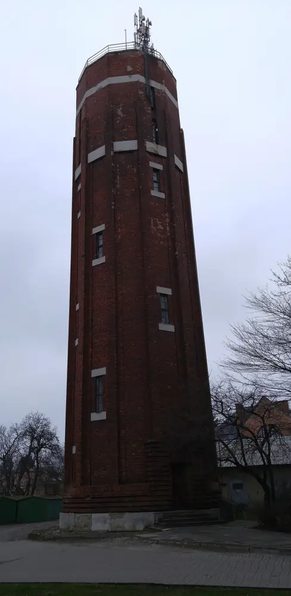
History
Design and construction took place in 1932–1933; the Encyclopedia of Modern Ukraine gives a broader interval of 1934–1937 for Minkiewicz’s two towers, which needs to be checked. The tower stands near the Zalizna Voda park. [55, 56]
Architecture and structure
Twelve-sided brick form, reinforced-concrete elements, stairs and an observation deck. The engineering calculations are associated with Adam Kuryłło.
Research agenda
Check the primary issues of the journal “Architektura i Budownictwo” for 1934 and the municipal records. The philosophy: a technical structure that included a public viewing scenario from the start.
Mayorivka tower
History
Built as a pair to the tower on Ternopilska Street. A 2025 study records historic photographs of 1960 and modern photographic documentation of 2025. A restaurant is mentioned in the 1990s. [57]
Architecture and structure
Twelve-sided form with an observation deck; the figure of 380 m in sources is the absolute altitude above sea level, not the height of the tower.
Research agenda
Verify the completion date in the city archive; establish the actual condition in 2026. The philosophy: the tower as a transition between hydraulics, the city skyline and tourism.
Velyka Bakta water tower

History
A 2025 scholarly publication describes the 1936 tower as out of service; the timber cladding is damaged, while the reinforced-concrete structure survives according to the authors. Wikimedia Commons holds a 2012 photograph captioned “Water tower, 1936”. [58, 59]
Architecture and structure
An important early example combining a reinforced-concrete support with timber elements; measured surveys and a study of reinforcement corrosion are needed.
Research agenda
Carry out photogrammetry and archival research for the Czechoslovak period. The philosophy: peripheral engineering as part of Central European modernisation.
Towers without an exact date: railways, estates, resorts
Station, estate and resort towers that have register status but no documented date or designer. This is where most of the archival and field research remains to be done.
Railway tower in Piskivka

History
A structure separate from the hyperboloid tower, described in the local history survey “Piskivka. Two towers”. The exact year of construction and of reconstruction has not been established. [41, 60]
Architecture and structure
The tank structure, the condition of the masonry and the link with steam-locomotive water supply need to be determined.
Research agenda
Field recording and geolocation of the two objects must be kept independent. The philosophy: two engineering eras in one settlement.
Tower of Velykyi Burluk station

History
The tower is part of the historic railway complex. Photographs taken by an expedition on 15 June 2019 locate the structure precisely on Station Square. [61, 62]
Architecture and structure
The brick shaft, the remains of the tank and pipework and the condition of the foundations should be studied.
Research agenda
Search for the station drawings and establish the date of construction. The philosophy: ordinary station architecture as a history of everyday logistics.
Kovel water tower
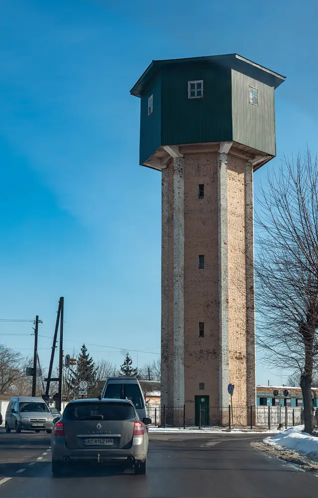
History
The list of monuments dates it to the 20th century. Wikimedia Commons holds photographs of 2012, 2016 and 2026 with the same monument identification. [63, 64]
Architecture and structure
A morphological analysis can begin from the photographs, but materials and condition should not be assessed without a survey.
Research agenda
Establish the year from railway inventories; compare the 2012–2026 images. The philosophy: urban memory that can be recovered through serial photographic monitoring.
Uman water tower
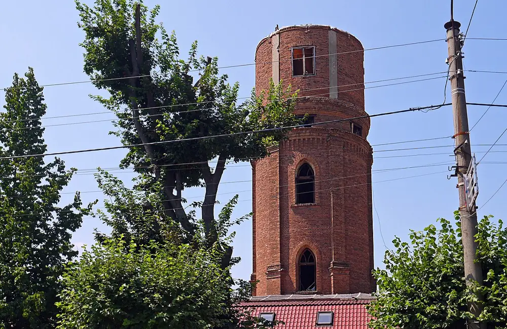
History
In September 2026 the media reported a demand to prepare registration documents and secure state protection. The structure’s presence on the list of newly identified objects dates back to 2010. The atlas gave the address as unknown; a 2016 photograph on Wikimedia Commons bearing a heritage identifier gives the exact location: 29 Yevropeiska Street. [65, 66]
Architecture and structure
No drawings, technical passport or measurements were verified in this study.
Research agenda
Obtain the 2010 decision and archival photographs. The philosophy: uncertainty as an honest category of a scholarly catalogue.
Water tower of the Tereshchenko estate

History
The tower survives within the estate’s service buildings, with attached carriage rooms and a cellar. Photographs of 2008 and later series make it possible to analyse changes. [67, 68]
Architecture and structure
An estate engineering system in which the technical function is integrated into the service ensemble.
Research agenda
Search for estate plans, insurance descriptions and water-supply documents. The philosophy: the technological modernisation of a private estate as part of the cultural landscape.
Yevpatoriia water tower

History
The Ukrainian list records the object as early 20th century. A 2013 photograph on Commons precisely identifies the address, 43 Kyivska Street. [20, 69]
Architecture and structure
An unusual water-tower composition; measured surveys and verification of the tank layout are needed.
Research agenda
Search the archives of the Yevpatoriia waterworks. The philosophy: a technical landmark of a resort town whose history must not disappear from Ukrainian scholarship.
The post-war era: reconstruction and standardisation
Post-war reconstruction of water supply: a rural tower of 1949, the VDNH tower (the exhibition opened on 6 July 1958) and the university tower in Holosiiv (1955).
Pisky-Radkivski water tower
History
The register list dates the object to 1949. No reliable photograph unambiguously linked to this particular tower was found in the verified sample. [61]
Architecture and structure
Material, height, tank structure and functional history are still needed.
Research agenda
Field photography when possible; search the community’s records. The philosophy: post-war reconstruction of water supply as social history.
VDNH water tower
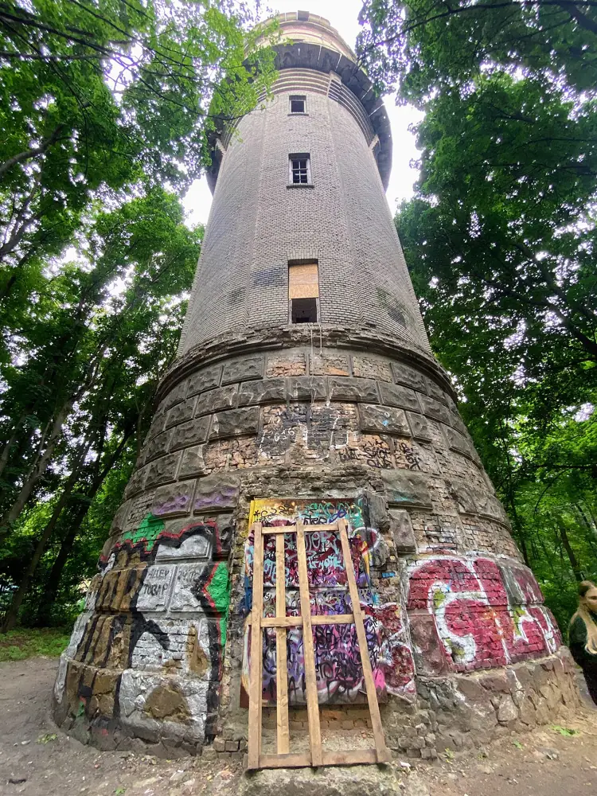
History
The tower was built while the VDNH complex was being formed; the exhibition opened on 6 July 1958. The city tourist portal reports roof damage after a fire and a bricked-up entrance. Wikimedia Commons holds a series of photographs from 2020–2025, including the damaged roof (2020) and the interior. [70, 71]
Architecture and structure
Cylindrical three-tier brick shaft about 30 m high with internal concrete stairs; an instrumental survey is required.
Research agenda
Obtain the Kyivproekt drawings, the date of the fire and condition reports. The philosophy: the invisible technical foundation of public exhibition architecture.
Tower of the Holosiiv academy
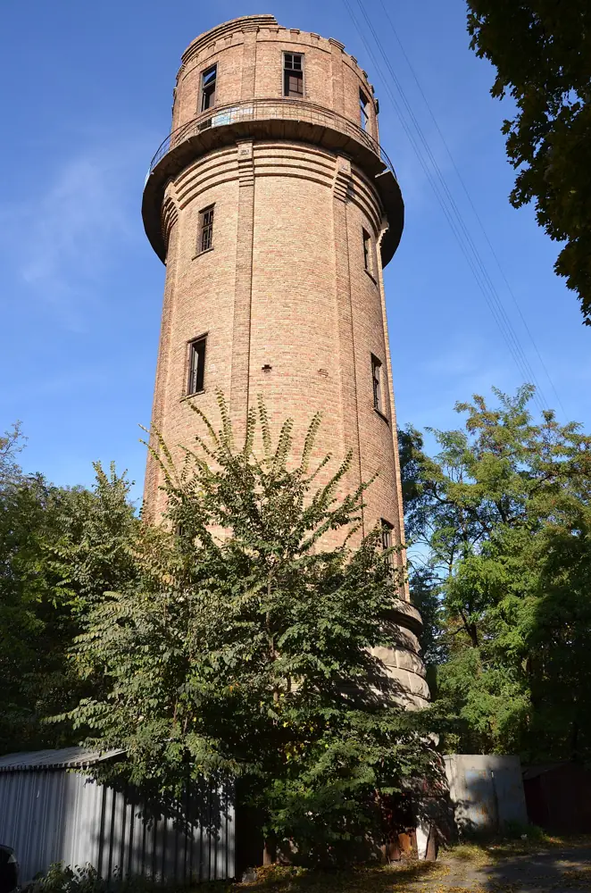
History
According to the Renovation Map, the tower was built in 1955 when the academy’s waterworks were modernised. It features in cases concerning a protection agreement and threats from new development. [72, 73]
Architecture and structure
About 30 m high according to the media; the object stands on a high point of the Holosiiv forest. There is no confirmed technical report.
Research agenda
Obtain the 1955 design and the protection agreement. The philosophy: an engineering structure as part of a university landscape and of the city’s ecological memory.
New objects in this edition: candidates and losses
Objects identified while preparing this edition: two Kremenchuk towers with monument identifiers, and the Izmail tower lost in 2024.
Water Tower No. 1, Kremenchuk
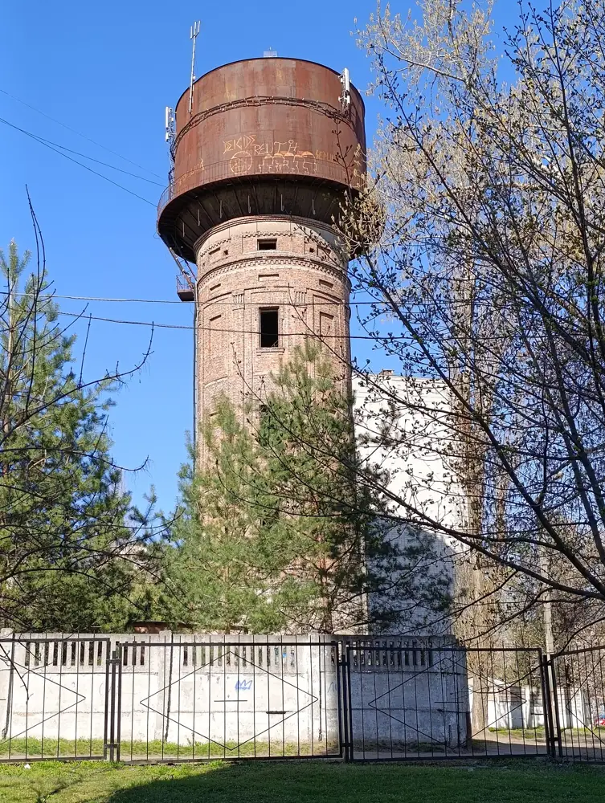
History
One of the two Kremenchuk towers with monument status. Kremenchuk’s historic fabric was almost entirely destroyed in the Second World War, so a surviving pre-war engineering structure has special value. A series of photographs on Commons from 2018–2025 makes it possible to monitor its condition. [74, 75]
Architecture and structure
Masonry tower; the tank structure, height and history of alterations require measured surveys and archival research.
Research agenda
Establish the year of construction from the records of the city water utility and the heritage register. The philosophy: a vertical that survived the destruction of its city.
Water Tower No. 2 at the railway station, Kremenchuk
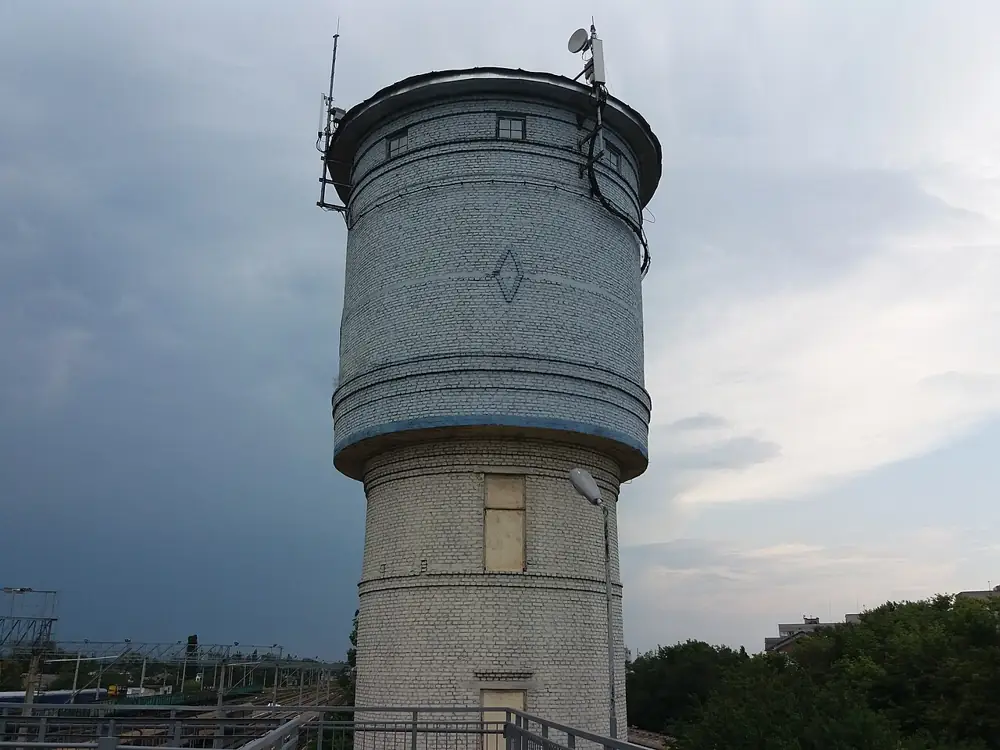
History
A station water tower in a historic railway junction, photographed in 2018–2019 for Commons. The local history site “Okolytsi Kremenchuka” shows how easily attribution can go wrong: a 1943 photograph of ruins long thought to show this tower turned out to be from the Baltic states. [76, 77, 78]
Architecture and structure
Masonry railway tower; the tank type and its link with steam-locomotive water supply need to be established.
Research agenda
Search for plans of Kremenchuk station and railway inventories. The philosophy: correct photo attribution as part of scholarly integrity.
Waterworks tower on Myru Square, Izmail (lost)

History
The tower was photographed in 2018. A caption on Wikimedia Commons states that it was demolished in 2024. This is level C: the date and circumstances of demolition must be confirmed by city council documents. [79, 80]
Architecture and structure
Since the object is lost, it can only be studied through photographs, drawings and testimony.
Research agenda
Collect photographs, drawings and the demolition decision; create a digital reconstruction. The philosophy: the catalogue as the last form of existence of a lost tower.
The tower that tells this story
Pilot site of the International Museum of Water Towers.
Mala Vilshanka water tower
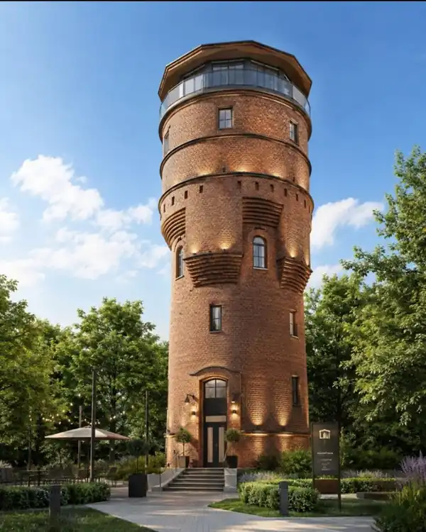
History
The object is the pilot site of the International Museum of Water Towers concept. According to the owner’s preliminary measurements it is about 15 m high, with an outer diameter of about 5 m and an inner diameter of about 4 m. [81]
Architecture and structure
Four levels; the geometry and condition of the masonry must be confirmed by professional measured and technical surveys before designing the museum conversion.
Research agenda
Find inventory descriptions and original drawings, establish the historic function, verify land rights and protection status. The philosophy: one local tower as the beginning of an international conservation network.
Authorship, dates and the honesty of a catalogue
1. Authorship is a multi-level system
Lviv, Stryiskyi Park: sketch by Julian Zachariewicz, design by Michał Łużecki, builders Józef Bałaban and Włodzimierz Podhorecki. Kulparkiv: Alfred Zachariewicz, not automatically other members of the Zachariewicz family. Ternopilska and Pasichna streets: Witold Minkiewicz as architect, Adam Kuryłło for the engineering calculations. Mykolaiv: Volodymyr Shukhov for the structure, V. Weber for the early concept of the waterworks. Kyiv: Oleksandr Shile [Alexander Schiele] for the towers, Amand Struve for the waterworks as a whole.
2. Dates are multi-dimensional
Zhytomyr: the archival dates 1894/1895/1897/1898 refine the register’s “1898–1899”. Vinnytsia: contract 1910, masonry 1911, completion 1911/1912. Minkiewicz’s Lviv towers: 1932–1933 in local documents and 1934–1937 in an encyclopaedic survey. Shostka: the 1910s versus c. 1929. Zaporizhzhia: 1895 in the register versus 1904 in the city list. These discrepancies have not been averaged — they are a subject for further research.
3. An unknown designer is not an error
For most railway and rural towers no designer has been found. The absence of a name in the available sources does not mean the design was anonymous; it is a concrete archival task.
4. A missing photograph is also a result
For three towers (Mayorivka, Pisky-Radkivski, Mala Vilshanka) there is no open, accurately attributed photograph. The “photo wanted” label is an invitation to communities and photographers to take part.
Why a water tower is heritage
The vertical and the common good. A water tower is the architectural form of a social contract. Its raised tank makes invisible infrastructure visible: urban sanitation, fire safety, railway traffic, industrial production and everyday dignity.
Authenticity and new use. A structure rebuilt after 1946 or 2003 does not cease to be culturally significant, but its material authenticity changes. An honest museum explains what has survived, what has been reconstructed and why. Revitalisation must not erase the structural logic for the sake of a spectacular interior.
Memory and risk. Chasiv Yar and Izmail show that a tower can be lost — through war or through a decision to demolish it. Photographs, drawings, a 3D model and an accurate catalogue do not replace a monument, but they preserve knowledge of it and the possibility of future restoration.
From search to atlas: a 12-month cycle
| Stage | Scope of work |
|---|---|
| Months 1–3 · register and authorship | Review of regional registers, orders and lists of newly identified objects; archival requests for 20 priority towers; a typology glossary and an identifier standard. |
| Months 4–6 · photographic evidence | For each object: frontal, diagonal, context, interior and detail shots; date, author, GPS, licence; historic and present-day views from the same point. |
| Months 7–9 · engineering record | Measured surveys, photogrammetry, laser scanning of a sample, structural passports, recording of deformation, corrosion, cracks and the condition of stairs. |
| Months 10–12 · publication | IMWT Ukraine Atlas with open metadata; five demonstration restoration cases; a mechanism for communities to submit unknown towers. |
Sources and photo archive
Numbered in order of first citation in the dossiers. Levels: A — primary, B — professional, C — reference. Before reusing a photograph, check its licence and attribution requirements on the file page. Source titles are given in English translation; the documents are in Ukrainian unless stated otherwise.
1 Great Ukrainian Encyclopedia: Kachanivka estate vue.gov.ua/Садиба_в_Качанівці A
2 Wikimedia Commons: Качанівка. Водогінна вежа.jpg commons.wikimedia.org/wiki/File:%D0%9A%D0%B0%D1%87%D0%B0%D0%BD%D1%96%D… C
3 KNUBA: Water Museum www.knuba.edu.ua/muzej-vody/ A
4 Curious places of Kyiv: the Water Museum. Kyiv Post (Ukrainian edition). www.kyivpost.com/uk/post/21922 C
5 Kyiv Water Museum. Wikipedia. en.wikipedia.org/wiki/Kyiv_Water_Museum C
6 Wikimedia Commons: Музей води, Водонапірна башта.JPG commons.wikimedia.org/wiki/File:%D0%9C%D1%83%D0%B7%D0%B5%D0%B9_%D0%B2%… C
7 Wikimedia Commons: Украина, Киев - Водонапорная башня в Крещатицком парке 01.jpg commons.wikimedia.org/wiki/File:%D0%A3%D0%BA%D1%80%D0%B0%D0%B8%D0%BD%D… C
8 Zaporizhzhia City Council: list of newly identified objects datamzp.gov.ua/administrativni-ta-inshi-poslugi/pogodzhennya-rozmische… B
9 Wikimedia Commons: Запоріжжя, водогінна башта, вул. Барикадна.jpg commons.wikimedia.org/wiki/File:%D0%97%D0%B0%D0%BF%D0%BE%D1%80%D1%96%D… C
10 Ministry of Culture of Ukraine: list of monuments (PDF) mincult.gov.ua/wp-content/uploads/2026/07/perelik-pamyatok-m.-kyyiv-st… B
11 Wikimedia Commons: Водонапірна вежа, Київ 01.jpg commons.wikimedia.org/wiki/File:%D0%92%D0%BE%D0%B4%D0%BE%D0%BD%D0%B0%D… C
12 Travels.in.ua travels.in.ua/uk-UA/object/4312/vodonapirna-vezha B
13 Wikimedia Commons: Water tower in Chornorudka.jpg commons.wikimedia.org/wiki/File:Water_tower_in_Chornorudka.jpg C
14 Viche (Cherkasy region) viche.ck.ua/region/vodonapirnu-bashtu-1891-roku-na-umanshhyni-vnesut-d… B
15 Wikimedia Commons: Поташ (Маньківський р-н). Водонапірна башта.jpg commons.wikimedia.org/wiki/File:%D0%9F%D0%BE%D1%82%D0%B0%D1%88_(%D0%9C… C
16 Photographs of Old Lviv photo-lviv.in.ua/8-rozkishnyh-lvivskyh-proektiv-mihala-luzhetskoho/ A
17 Wikimedia Commons: Вежа (стрийський парк).jpg commons.wikimedia.org/wiki/File:%D0%92%D0%B5%D0%B6%D0%B0_(%D1%81%D1%82… C
18 State Archives of Zhytomyr Oblast zhytomyr.archives.gov.ua/?p=3259 B
19 Wikimedia Commons: Водонапірна вежа, 2023 рік.jpg commons.wikimedia.org/wiki/File:%D0%92%D0%BE%D0%B4%D0%BE%D0%BD%D0%B0%D… C
20 List of cultural heritage monuments of the Autonomous Republic of Crimea (as of 15 April 2024). Ministry of Culture of Ukraine. mincult.gov.ua/wp-content/uploads/2024/04/ar_krym-stanom-na-15.04.24.p… A
21 Wikimedia Commons: Водонапорная башня «Белый бассейн».jpg commons.wikimedia.org/wiki/File:%D0%92%D0%BE%D0%B4%D0%BE%D0%BD%D0%B0%D… C
22 Ministry of Culture of Ukraine: list of monuments of Zaporizhzhia Oblast (PDF) mcsc.gov.ua/wp-content/uploads/2024/04/zaporizka_obl.stanom-na-15.04.2… B
23 Wikimedia Commons: Водонапірна башта Другої Катерининської залізниці.jpg commons.wikimedia.org/wiki/File:%D0%92%D0%BE%D0%B4%D0%BE%D0%BD%D0%B0%D… C
24 Historical and architectural heritage of old Mykolaiv (PDF) mykoodb.org.ua/wp-content/uploads/2019/03/Istoryko-arhitekturna-spadsh… A
25 A Ukrainian rival of the Eiffel Tower. Telegraf. news.telegraf.com.ua/ukr/obshhestvo/5940673-ukrainska-konkurentka-eyfe… C
26 Engineer Shukhov’s water tower, Mykolaiv. MoreInfo. moreinfo.ua/en/nikolaev/place/vodonapornaja_bashnja_inzhenera_shuhova C
27 Wikimedia Commons: Шуховська водонапірна башта Миколаїв.jpg commons.wikimedia.org/wiki/File:%D0%A8%D1%83%D1%85%D0%BE%D0%B2%D1%81%D… C
28 History of Cherkasy: the Shukhov tower history.cherkassy.ua/index.php/arkhitektura-mista/25-bashta-shukhova.h… B
29 Shukhov Tower, Cherkasy. Travels.in.ua. travelsinua-prod.azurewebsites.net/en-US/object/3227/shukhov-tower C
30 Wikimedia Commons: Гіперболоїдна вежа Шухова у Черкасах.jpg commons.wikimedia.org/wiki/File:%D0%93%D1%96%D0%BF%D0%B5%D1%80%D0%B1%D… C
31 Sumy State University: conference abstracts 2019 (PDF) csp.sumdu.edu.ua/docs/2019/tezy2019.pdf B
32 Wikimedia Commons: Водогінна вежа конструкції Володимира Шухова Шостка.jpg commons.wikimedia.org/wiki/File:%D0%92%D0%BE%D0%B4%D0%BE%D0%B3%D1%96%D… C
33 Ukrainian Cultural Foundation: register of applications ucf.in.ua/m_programs/5f8048d50aa0bb6e4665c9b3/register?type=received_a… A
34 Wikimedia Commons: Водогінна вежа конструкції Володимира Шухова Часів Яр 1.jpg commons.wikimedia.org/wiki/File:%D0%92%D0%BE%D0%B4%D0%BE%D0%B3%D1%96%D… C
35 Konotop City Council: museum’s golden collection konotop-rada.gov.ua/zoloti-fondy-muzeiu-10/ A
36 Wikimedia Commons: Shukhov tower (Konotop) (1).JPG commons.wikimedia.org/wiki/File:Shukhov_tower_(Konotop)_(1).JPG C
37 Bila Tserkva Invest: Shukhov water tower www.bilatserkvainvest.com/vodonapirna-vezha-shuhova B
38 Wikimedia Commons: Bila cerkva shukhov tower.jpg commons.wikimedia.org/wiki/File:Bila_cerkva_shukhov_tower.jpg C
39 Lviv Polytechnic National University: dissertation, 2017 (PDF) old.lpnu.ua/sites/default/files/dissertation/2017/5725/diss_smolenska.… B
40 Wikimedia Commons: Гіперболоїдна вежа Помічна.jpg commons.wikimedia.org/wiki/File:%D0%93%D1%96%D0%BF%D0%B5%D1%80%D0%B1%D… C
41 Ukraina Incognita ukrainaincognita.com/kyivska-oblast/borodyanskyi-raion/piskivka/piskiv… B
42 Wikimedia Commons: Пісківка водогінна вежа Шухова (1).jpg commons.wikimedia.org/wiki/File:%D0%9F%D1%96%D1%81%D0%BA%D1%96%D0%B2%D… C
43 Photographs of Old Lviv photo-lviv.in.ua/vodonapirna-vezha-na-kulparkovi/ B
44 Wikimedia Commons: Kulparkiv Water Tower.jpg commons.wikimedia.org/wiki/File:Kulparkiv_Water_Tower.jpg C
45 Ministry of Culture of Ukraine: list of monuments (PDF) mincult.gov.ua/wp-content/uploads/2026/06/sumska-oblast_-stanom-na-23.… B
46 Wikimedia Commons: Water tower at Krolevets Railway Station.jpg commons.wikimedia.org/wiki/File:Water_tower_at_Krolevets_Railway_Stati… C
47 Wikimedia Commons: Симферополь водонапорная башня.JPG commons.wikimedia.org/wiki/File:%D0%A1%D0%B8%D0%BC%D1%84%D0%B5%D1%80%D… C
48 Vinnytsia National Technical University: 2017 publication (PDF) pdf.lib.vntu.edu.ua/books/2024/vntu_2017_netpub.pdf B
49 Vinnytsia water tower. Wikipedia. en.wikipedia.org/wiki/Vinnytsia_water_tower C
50 Vinnytsia Water Tower. Structurae. structurae.net/en/structures/vinnytsia-water-tower C
51 Wikimedia Commons: Vinnytsia - Water tower.jpg commons.wikimedia.org/wiki/File:Vinnytsia_-_Water_tower.jpg C
52 Hlukhiv National Reserve: waterworks tower nz-hlukhiv.com.ua/pamyatki-arhitekturi-mistsevogo-znachennya/bashta-vo… A
53 Water Tower, Hlukhiv. Travels.in.ua. travelsinua-prod.azurewebsites.net/en-US/object/1153/water-tower C
54 Wikimedia Commons: Водонапірна башта, Глухів.JPG commons.wikimedia.org/wiki/File:%D0%92%D0%BE%D0%B4%D0%BE%D0%BD%D0%B0%D… C
55 Photographs of Old Lviv photo-lviv.in.ua/vodonapirna-vezha-na-ternopilskij-mynule-ta-sohodenny… B
56 Wikimedia Commons: Водонапірна вежа * Львів Тернопільська 24А * 1.jpg commons.wikimedia.org/wiki/File:%D0%92%D0%BE%D0%B4%D0%BE%D0%BD%D0%B0%D… C
57 Photographs of Old Lviv photo-lviv.in.ua/scho-sproektuvav-rektora-lvivskoji-politehniky-vitold… B
58 KNUBA: collection of scholarly papers, 2025 library.knuba.edu.ua/books/zbirniki/29/2025/SD2514.pdf B
59 Wikimedia Commons: Водонапірна башта, 1936 р. .jpg commons.wikimedia.org/wiki/File:%D0%92%D0%BE%D0%B4%D0%BE%D0%BD%D0%B0%D… C
60 Wikimedia Commons: Водонапірна башта ст.Пісківка.JPG commons.wikimedia.org/wiki/File:%D0%92%D0%BE%D0%B4%D0%BE%D0%BD%D0%B0%D… C
61 Ministry of Culture of Ukraine: list of monuments (PDF) mincult.gov.ua/wp-content/uploads/2026/05/harkivska-oblast_stanom-na-2… B
62 Wikimedia Commons: Burluk Railway Station Water Tower by Venzz 01.jpg commons.wikimedia.org/wiki/File:Burluk_Railway_Station_Water_Tower_by_… C
63 Ministry of Culture of Ukraine: list of monuments (PDF) mincult.gov.ua/wp-content/uploads/2024/04/295-vid-19.04.2024.pdf B
64 Wikimedia Commons: Водонапірна башта, Ковель.jpg commons.wikimedia.org/wiki/File:%D0%92%D0%BE%D0%B4%D0%BE%D0%BD%D0%B0%D… C
65 Hromadske Uman hromadske-uman.com/?p=18867 B
66 Wikimedia Commons: Водонапірна башта (Європейська, 29) P1260928.jpg commons.wikimedia.org/wiki/File:%D0%92%D0%BE%D0%B4%D0%BE%D0%BD%D0%B0%D… C
67 Ukraina Incognita ukrainaincognita.com/mista/shpytky-zalyshky-maietku-tereshchenkiv-vodo… B
68 Wikimedia Commons: Водонапірна-башта-Терещенка-загальний-вигляд.JPG commons.wikimedia.org/wiki/File:%D0%92%D0%BE%D0%B4%D0%BE%D0%BD%D0%B0%D… C
69 Wikimedia Commons: 0345-Water Tower 1.jpg commons.wikimedia.org/wiki/File:0345-Water_Tower_1.jpg C
70 Kyiv city tourist portal guide.kyivcity.gov.ua/places/vodonapirna-vezha-na-vdnh B
71 Wikimedia Commons: Водонапірна вежа, Київ. Проспект Академіка Глушкова 01.jpg commons.wikimedia.org/wiki/File:%D0%92%D0%BE%D0%B4%D0%BE%D0%BD%D0%B0%D… C
72 Renovation Map renovationmap.org/building/1HvJ1/ B
73 Wikimedia Commons: Водонапорна башта, Глушкова Академіка просп., 1.JPG commons.wikimedia.org/wiki/File:%D0%92%D0%BE%D0%B4%D0%BE%D0%BD%D0%B0%D… C
74 Category: Water tower on Svobody Avenue, Kremenchuk. Wikimedia Commons. commons.wikimedia.org/wiki/Category:Water_tower_on_Svobody_Avenue,_Kre… C
75 Wikimedia Commons: Водонапірна башта № 1, квітень 2025.jpg commons.wikimedia.org/wiki/File:%D0%92%D0%BE%D0%B4%D0%BE%D0%BD%D0%B0%D… C
76 Category: Water tower (Kremenchuk railway station). Wikimedia Commons. commons.wikimedia.org/wiki/Category:Water_tower_(Kremenchuk_railway_st… C
77 Ruins of a water tower, 1943 (attribution corrected). Okolytsi Kremenchuka. okrain.net.ua/en/ruiny-vodonapornoj-bashni-1943-god-foto-622-en/ C
78 Wikimedia Commons: Water tower at Kremenchuk Railway Station (2019-07-21).jpg commons.wikimedia.org/wiki/File:Water_tower_at_Kremenchuk_Railway_Stat… C
79 Category: Myru Square Water Tower, Izmail. Wikimedia Commons. commons.wikimedia.org/wiki/Category:Myru_Square_Water_Tower,_Izmail C
80 Wikimedia Commons: Myru Square Water Tower, 2018.10.06.jpg commons.wikimedia.org/wiki/File:Myru_Square_Water_Tower,_2018.10.06.jp… C
81 IMWT imwt.space/ B